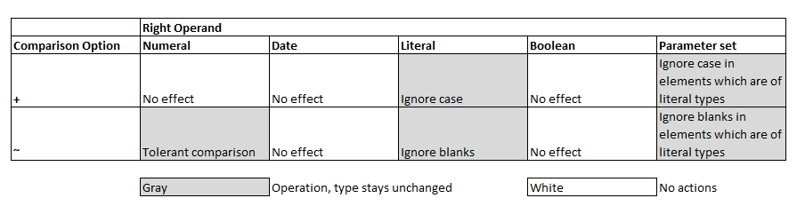
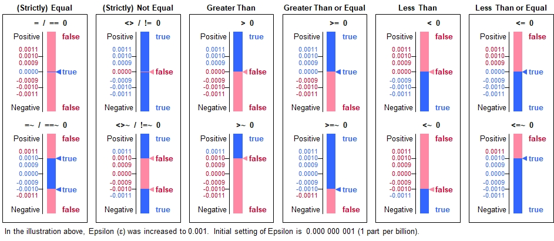

Introduction
Comparison options provide further adjustments on the comparison rules. The rules affect the following:
- String comparisons: Ignoring case and/or blanks
- Numeric comparisons: Using epsilon as tolerance value.

Options for String Comparisons
Specify '+' after the comparison operator to ignore upper/lower case checking, and '~' to ignore all blanks. Both symbols may be used where it does not matter if specified as '+~' or the '~+'.
Comparing varieties of ahorns and the F horn (an instrument)
runtime settings[ epsilon ] = 0.001; // Make comparisons very tolerant for now to show how it works
// 1st number is on left side of comparison, the others are on the right sides
numbers[] = { A horn, A Horn, AHorn, A horn, Ahorn, a horn, ahorn, F horn };
symbols[] = { '=', '=~', '=+', '=+~', '', // Blanks cause line breaks for better visibility
'<>', '<>~', '<>+', '<>+~', '',
'>', '>~', '>+', '>+~', '',
'>=', '>=~','>=+', '>=+~', '',
'<', '<~', '<+', '<+~', '',
'<=', '<=~','<=+', '<=+~' };
table initialize( overview, {numbers[]} + symbols[] );
table process selected rows( overview, [0]!='',
for (col[] = 1, col[] < table row width( overview, 0 ), col[]++ )
{
// Formulate the coparison expression in a string and use 'compare' to use it. Colon required for this.
// [0,0] = Current table (overview), column 0, row 0. [0] = Current table, column 0, current row
[col[]] = compare ( [0,0], : [0] + [col[],0] );
} );
table list( overview ); Output 02
0 : A horn | A Horn | AHorn | A horn | Ahorn | a horn | ahorn | F horn
1 : = | false | false | true | false | false | false | false
2 : =~ | false | false | true | true | false | false | false
3 : =+ | true | false | true | false | true | false | false
4 : =+~ | true | true | true | true | true | true | false
5 : | | | | | | |
6 : <> | true | true | false | true | true | true | true
7 : <>~ | true | true | false | false | true | true | true
8 : <>+ | false | true | false | true | false | true | true
9 : <>+~ | false | false | false | false | false | false | true
10 : | | | | | | |
11 : > | true | false | false | false | false | false | false
12 : >~ | true | true | false | false | false | false | false
13 : >+ | false | false | false | false | false | false | false
14 : >+~ | false | false | false | false | false | false | false
15 : | | | | | | |
16 : >= | true | false | true | false | false | false | false
17 : >=~ | true | true | true | true | false | false | false
18 : >=+ | true | false | true | false | true | false | false
19 : >=+~ | true | true | true | true | true | true | false
20 : | | | | | | |
21 : < | false | true | false | true | true | true | true
22 : <~ | false | false | false | false | true | true | true
23 : <+ | false | true | false | true | false | true | true
24 : <+~ | false | false | false | false | false | false | true
25 : | | | | | | |
26 : <= | false | true | true | true | true | true | true
27 : <=~ | false | false | true | true | true | true | true
28 : <=+ | true | true | true | true | true | true | true
29 : <=+~ | true | true | true | true | true | true | true
Options for Numeric Comparisons
For numeric comparisons, the plus sign is ignored. However, the '~' sign provides a numeric tolerance of value epsilon.
This value is maintained in the system variable run time settings[epsilon] and may be changed to a different
meaningful value if needed. Tolerant comparisons make sense for comparing two values which have gone through some
calculatons and minor numeric imprecisions may have occurred which should not adversely influence numeric comparisons.
The following overview illustrates how the epsilon comparison tolerance is applied for the different operators:

Simple example of comparisons dealing with minor imperfections from calculations
a[] = 1.2156;
b[] = a[] * 1.9123 * 2.591271 / 1.9123 / 2.591271; // Result should be unchanged ...theoretically.
echo( a[], ", ", b[] );
echo( "Epsilon: ", runtime settings[epsilon] );
echo( "Hard comparison : ", a[] = b[] ); // Falsely outputting false
echo( "Tolerant comparison: ", a[] = ~b[] ); // Now it's OK (both values are within epsilon tolerance)Output 03
1.2156, 1.2156
Epsilon: 0.0000000001
Hard comparison : false
Tolerant comparison: true
Comprehensive overview
runtime settings[ epsilon ] = 0.001; // Make comparisons very tolerant for now to show how it works
// 1st number is on left side of comparison, the others are on the right sides
numbers[] = { 15.0000, 14.9989, 14.9990, 14.9991, 15.0000, 15.0009, 15.0010, 15.0011 };
symbols[] = { '=', '=~', '<>', '<>~', '>', '>~', '>=', '>=~', '<', '<~', '<=', '<=~' };
table initialize( overview, {numbers[]} + symbols[] );
table process( overview,
for (col[] = 1, col[] < table row width( overview, 0 ), col[]++ )
{
// Formulate the coparison expression in a string and use 'compare' to use it. Colon required for this.
// [0,0] = Current table (overview), column 0, row 0. [0] = Current table, column 0, current row
[col[]] = compare ( [0,0], : [0] + str( [col[],0] ) );
} );
table list( overview ); 0 : 15.0000 | 14.9989 | 14.9990 | 14.9991 | 15.0000 | 15.0009 | 15.0010 | 15.0011
1 : = | false | false | false | true | false | false | false
2 : =~ | false | true | true | true | true | true | false
3 : <> | true | true | true | false | true | true | true
4 : <>~ | true | false | false | false | false | false | true
5 : > | true | true | true | false | false | false | false
6 : >~ | true | false | false | false | false | false | false
7 : >= | true | true | true | true | false | false | false
8 : >=~ | true | true | true | true | true | true | false
9 : < | false | false | false | false | true | true | true
10 : <~ | false | false | false | false | false | false | true
11 : <= | false | false | false | true | true | true | true
12 : <=~ | false | true | true | true | true | true | true